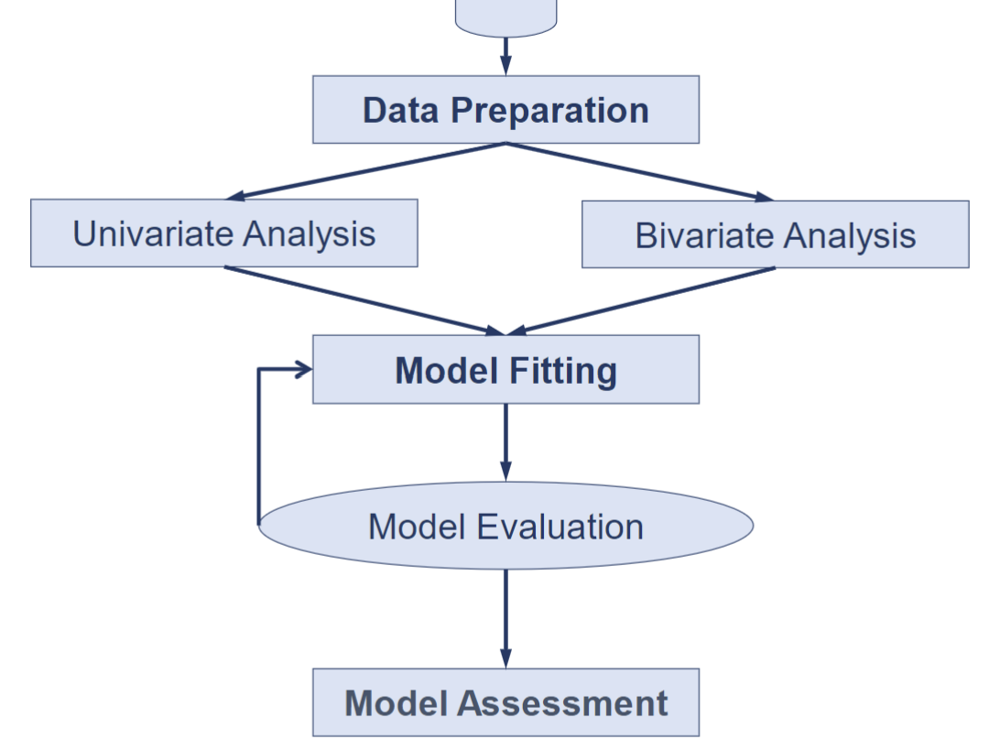
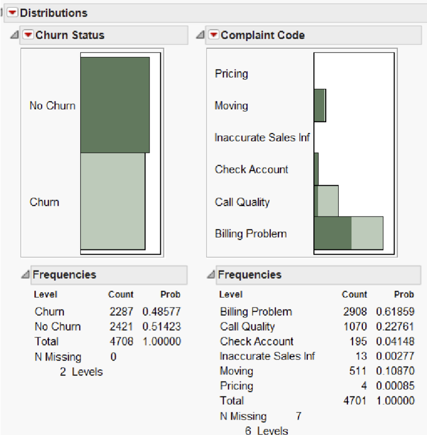
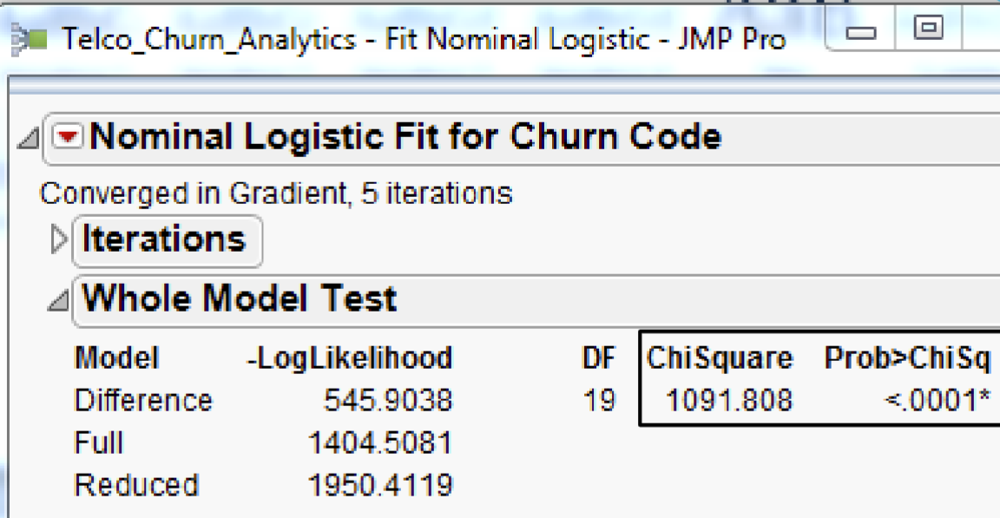
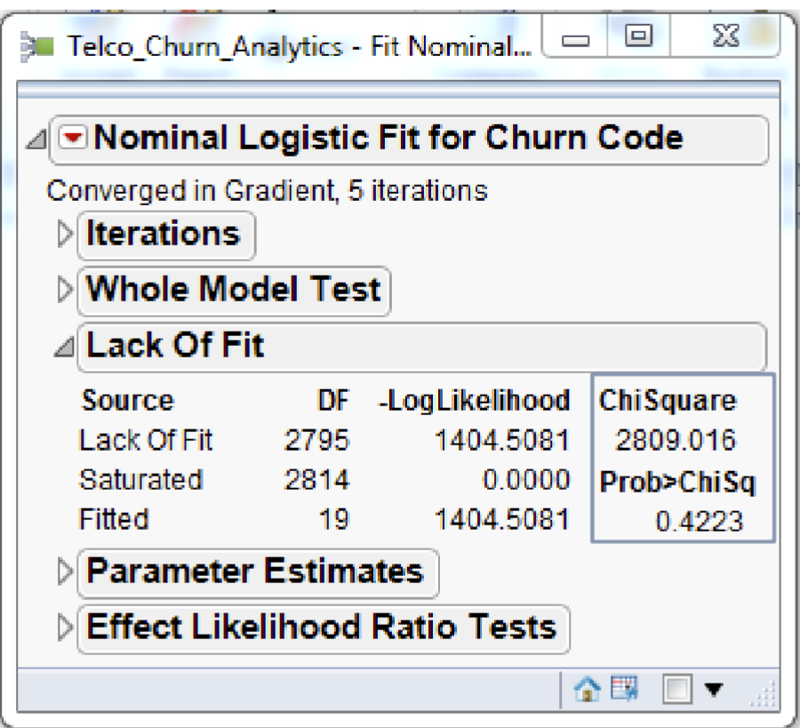
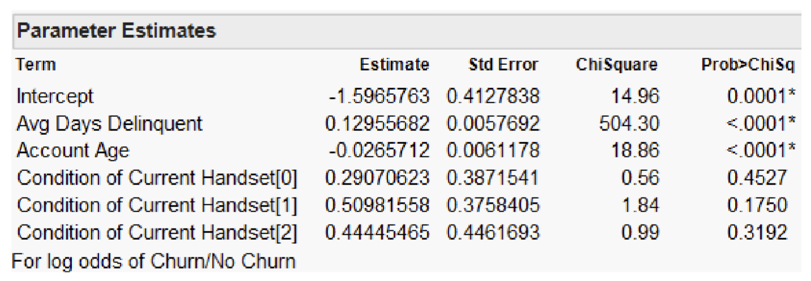
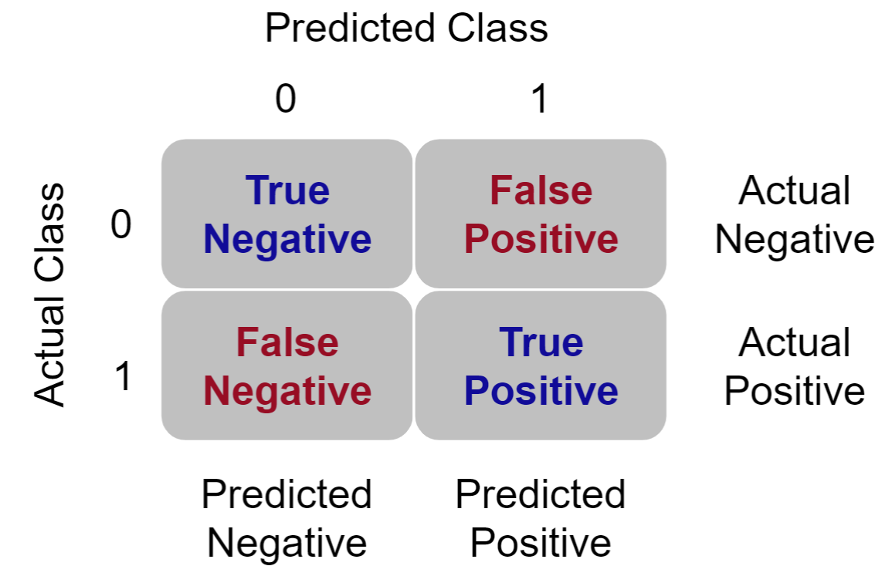
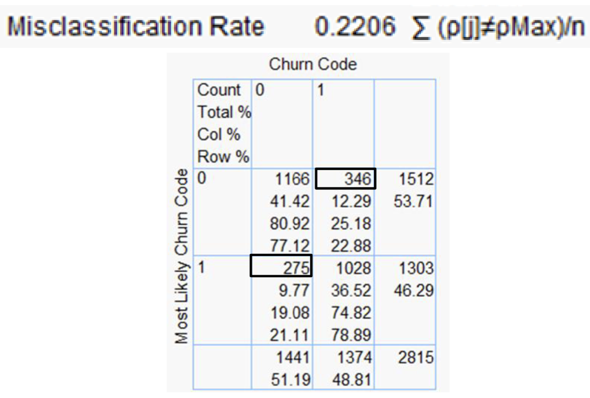
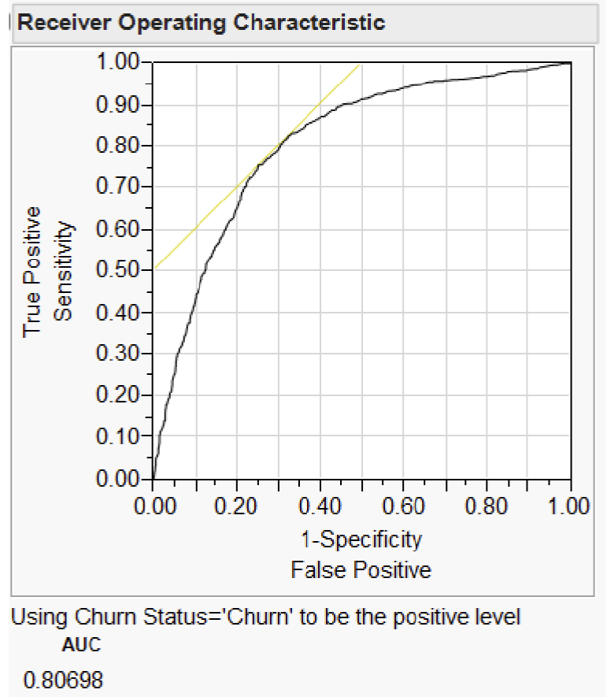

Geographically Weighted Logistic Regression (GWLR)
- Understand the differences between binary and continuous outcomes.
- Understand the basic concepts and methods of logistic regression models.
- Interpret the model and analysis results accurately.
- Compare and evaluate predictive models generated using logistic regression.
Key Questions :
How do I tell if my model is good?
How do I tell if the explanatory variable helping my model?
How do I tell if my model is providing reasonable prediction?
Logistic regression model can be used as :
explanatory model
predictive model
Whether a customer churns, (y = 1) or not churns (y = 0) after signed up a mobile service contract.
- probability (p) depends on x.
- x is the explanatory variable (either categorical (discrete) or quantitative), such as :
- account age
- current billing amount
- average days delinquent
Suitability of Linear Regression
When the value of a variable is a binary response, the linear regression assumptions are not valid based on the following :
the relationship between the independent variable and predictor variable is not linear.
the error terms are :
heteroscedastic
not normally distributed
If proceeding in light of these violations, the results would be :
the predicted probabilities can be greater than 1 or less than 0.
the magnitude of the effects of independent variables may be greatly underestimated.
A simple linear regression modelled the mean μ of the response variable y as a linear function of the explanatory variable : 𝜇 = 𝛽0 + 𝛽1𝑥.
A logistic regression would model the mean of the response variable p in terms of an explanatory variable x.
BUT, this is not a good model when relating p and x through the equation 𝑝 = 𝛽0 + 𝛽1𝑥.
As long as 𝛽0 ≠ 0, extreme values of x will give values of 𝛽0 + 𝛽1𝑥 that is inconsistent with the fact that 0 ≤ p ≤ 1.
Transform the odds to get odds ratio, 𝑝 / 1−𝑝
note : logistic regressions work with odds rather than proportions.
Model the log odds as a linear function of the explanatory variable.
The slope in a logistic regression model = the difference between the log(ODDS) for churn and the log(ODDS) for not churn.
Logistic distribution constrains the estimated probability between 0 and 1, via :
𝑝 = 1 / 1+𝑒−(𝛽0+𝛽1𝑥)
𝛽0 + 𝛽1𝑥 = 0 , then p = .50
𝛽0 + 𝛽1𝑥 gets really big, p approaches 1
𝛽0 + 𝛽1𝑥 gets really small, p approaches 0
Definition of Odds
Odds are the ratio of the proportions for the two possible outcomes.
Odds(event) = P(event) / 1-P(event)
Total customers = 13,196
Churn = 1,091
Sample proportion, p^ = 1,091 / 13,196 = 0.0827
Odds = 0.0827 / 0.9173 = 0.0902
Interpretation :
The odds that a customer is going to churn as 9 to 100.
Interpretation of a simple logistic regression
simple logistic regression, ln (𝑃 / 1 − 𝑝) = 0.5954 + −0.0255(account_age)
For account_age = 20,
ln (𝑃 / 1 − 𝑃) = 0.5954 + −0.0255(20) = 0.0854
𝑒0.0854 / (1 + 𝑒0.0854) = 0.5213
note :
For every 1 month increase in account_age, the logit of the probability of a churn decrease by 0.0255.
Given account_age of a customer is 20, the log-odds = 0.0854
Probability of Churn (also known as probability of log-odds) = 0.5213
Interpretation :
A customer with 20 months account_age has an average of 0.5213 chance that she/he will churn.
Differences between Multiple Logistic Regression and Linear Regression
Instead of using a least-squared deviations criterion for the best fit, it uses a maximum likelihood method, which maximizes the probability of getting the observed results given the fitted regression coefficients.
A consequence is that the goodness of fit and overall significance statistics used in logistic regression
differ from those used in linear regression.
Assumptions of Logistic Regression
Logistic regression does not assume a linear relationship between the dependent and independent variables.
For binary logistic regression, the dependent variable must be a dichotomy (2 categories).
The independent variables need not be interval, normally distributed, linearly related, nor of equal variance within each group.
The categories (groups) must be mutually exclusive and exhaustive.
A case can only be in one group and every case must be a member of one of the groups.
For logistic regression, a larger samples are needed than for linear regression because maximum likelihood coefficients are large sample estimates.
Workflow Diagram :: Logistic Regression Modelling

Univariate Analysis
Check for outliers and determine the distribution of each predictor variable.
Determine the numbers of dummy variables to create for a predictor variable.

E.g. the figure above shows that when “Non-churn” cases are strongly related to “Moving” and “Check Account” under the “Complain Code” variable.
- Consider combining both “Moving” and “Check Account” to form a group.
Bivariate Analysis
Similar to multiple linear regression, logistic regression model is sensitive to multicollinearity.
- Multicollinearity occurs when some of the predictors are highly correlated.Model Performance Evaluation
There are several statistics which can be used for comparing alternative models or evaluating the performance of a logistic regression model :
- Whole model test
- Fit statistics
- Assessing individual parameters
1. Whole Model Test
Testing :
𝐻0 : The logistic model is NOT useful 𝐻1 : The logistic model is useful

The test is analogous to the Analysis of Variance table for continuous responses.
The negative log-likelihood corresponds to the sums of squares, and the Chi-square test corresponds to the F-test.
Reject 𝐻0 if the Chi Square is large and the 𝑝 value is smaller than the critical value (i.e. 0.05, or 0.01, 0.001, 0.0001).
The 𝑝-value < 0.0001* indicates that the logistic model is useful to explain the ODDS(churn).
In other words, the overall model is significant at the .0001 level according to the Model chi-square statistic.
2. Lack fof Fit Test (Goodness of Fit)
Testing :
𝐻0 : The model is adequate 𝐻1 : The model is inadequate, i.e. there is lack of fit.

Reject 𝐻0 if the Chi Square statistics is large and the 𝑝 value is smaller than the critical value (i.e. 0.05, or 0.01, 0.001, 0.0001).
The above figure shows that the Lack of Fit Chi-square is not significant (Prob > ChiSq = 0.4223) and supports the conclusion that there is little to be gained by introducing additional variables.
3. Assessing Individual Parameters
Testing :
𝐻0 : 𝛽1 = 0
𝐻1 : 𝛽1 ≠ 0
Test statistics, 𝑍 = 𝑏1 / 𝑆𝐸𝑏1
Statistical inference for multiple logistic regression is similar to statistical inference for multiple linear regression.
Calculate estimates of the model parameters and standard errors for these estimates.
Confidence intervals are formed in the usual way but use standard normal z∗-values rather than critical values from the t distributions.
The ratio of the estimate to the standard error is the basis for hypothesis tests.
Often the test statistics are given as the squares of these ratios.
In this case, the P-values are obtained from the chi-square distributions with 1 degree of freedom.
The statistic z is sometimes called a Wald statistic.

Output from some statistical software reports the significance test results in terms of chi-square statistic, i.e. square of the z statistic
𝑋2 = 𝑥2
When the null hypothesis is true, it has a distribution that is approximately a 𝑥2 distribution with 1 degree of freedom, and the P-value is calculated as P(𝑥2 ≥ 𝑋2).
Because the square of a standard normal random variable has a 𝑥2 distribution with 1 degree of freedom, the 𝑧 statistic and the chi-square statistic give the same results for statistical inference.
The Parameter Estimates report reveals that not all predictor variables are significant.
In fact, only Avg Days Delinquent and Account Age with p-values < 0.0001.
The Condition of Current Handset is not significant.
Likelihood-ratio Test (LRT)
LRT tests are computed iteratively and can be computationally intensive for some models, so historically Wald’s tests had been used more often.
The Effect Likelihood Ratio Tests report above show that both predictor variables Avg Days Delinquent and Account Age are significant at p < 0.0001 and predictor Condition of Current Handset is not significant p = 0.3181.
Accuracy of Predictive Modelling
Contigency Table / Error Table / Confusion Matrix
In binomial logistic regression, the classification table is a 2 x 2 table that contains the observed and predicted model results.

The contingency table has 4 data cells :
Actual 0 Predicted 0 – The number of cases that were both predicted and observed as 0.
The records in this cell are referred to as true negatives.
The model classification was correct for these records.
Actual 0 Predicted 1 – The number of cases that were predicted as 1 yet observed as 0.
The records in this cell are referred to as false positives.
The model classification was incorrect for these records.
Actual 1 Predicted 1 – The number of cases that were both predicted and observed as 1.
The records in this cell are referred to as true positives.
The model classification was correct for these records.
Actual 1 Predicted 0 – The number of cases that were predicted as 0 yet observed as 1.
The records in this cell are referred to as false negatives.
The model classification was incorrect for these records.
The model classify each data record based on :
The computed probability between 0 and 1.
The threshold / cut value = the minimal value of probability to classify as 0 or 1.
- The default “cut value” is 0.5. When a value is larger than 0.5, will be classified as 1.
Misclassification Rate :: Classification Table / Contingency Table
To assess the overall performance of a logistic regression model.

The classification table above shows that there are 346 false negative and 275 false positive. The overall misclassification error is 22.06%, i.e. ( 346 + 275 ) / 2815 ).
According to the Misclassification Rate measure, the model predicts 77.94% of the churn cases correctly.
Contingency Analysis
Overall Accuracy ::: callout-tips overall_accuracy = ( 𝑻𝑷 + 𝑻𝑵 ) / ( 𝑻𝑷 + 𝑭𝑷 + 𝑭𝑵 + 𝑻𝑵 ) ::: Refers to the correctly classified observations divided by the total number of observations. - This statistics is not a particularly useful measure because it gives equal weight to all components.
Sensitivity refers to the true positive rate. ::: callout-tips sensitivty = ( 𝑻𝑷 ) / ( 𝑻𝑷 + 𝑭𝑵 ) :::
Specificity refers to the true negative rate. ::: callout-tips specificity = ( 𝑻𝑵 ) / ( 𝑻𝑵 + 𝑭𝑷 ) :::
False Positive rate indicates the probability of predicted non-negative event. ::: callout-tips false positive = ( 𝑭𝑷 ) / ( 𝑻𝑵 + 𝑭𝑷)
Receiver Operating Characteristic (ROC) Curve

An ROC curve shows how rapidly the true positive and false negative transition happens, with the goal being to have diagnostics that maximize the area under the curve.
Two standard definitions used in predictive modelling are as follows : • Sensitivity = the probability that a given x value (a test or measure) correctly predicts an existing condition.
• Specificity, the probability that a test correctly predicts that a condition does not exist.
A ROC curve is a plot of sensitivity by (1 – specificity) for each value of x. The area under the ROC curve is a common index used to summarize the information contained in the curve.
In the plot, a light yellow line is drawn at a 45 degree angle tangent to the ROC Curve. This marks a good cutoff point under the assumption that false negatives and false positives have similar costs.
ROC Gives a good indication to model performance (values are between 0.5 and 1).
This variable should be as high as possible with some restrictions. Typical values indicate the following: • 0.5 – No distinguish ability (the model has no meaning). • 0.51 – 0.7 – Low distinguish ability (not a very good model yet the model can be used). • 0.71 – 0.9 – Very good distinguish ability. • 0.91 – 1 – Excellent distinguish ability.
Warning: In some fields, logistic regression models can have an excellent distinguish ability, however this might indicate that the model is “too good to be true”. Double and triple check your model making sure that no variables from the future are present and that the model has no other odd parameter values.
Geographically Weighted Multiple Logistic Regression Model
As an expansion to the standard logistic regression, logistic GWR incorporates a set geographical location to the models :
where, 𝛽0i and 𝛽1i = local model parameters specific to location at ( ui , vi ) coordinate.
GWLR is the geographically weighted extension to the logistic regression model and similar to ordinary regression. But with the help of a moving window or kernel function facility provided by geographically weighted methods, local regression models are computed at locations all over the study region.
The GWR discussed in previous lesson can be extended to GWLR with the help of a logit function as shown in the formula above.
The distance weights of GWLR are distance-based.
Two commonly used distance weights :
fixed-distance weighted
adaptive-distance weighted
The minimum bandwidth distance or size can be determined by :
Akaike Information criterion (AIC)
Cross-validation (CV)
Similar to basic gwr method, five (5) spatial kernel1 namely :
1 Exploratory Spatial Data Analysis with gwpcorMapper: an Interactive Mapping Tool for Geographically Weighted Correlation and Partial Correlation - Scientific Figure on ResearchGate. Available from: https://www.researchgate.net/figure/Kernel-functions-available-in-gwpcorMapper-a-Gaussian-b-exponential-c-box-car-d_fig2_360992908 [accessed 15 Dec, 2022]
Gaussian,
Exponential,
Box-car,
Bi-square
Tri-cube smoothing methods
References - Method • Kleinbaum, D.G. and Klein, M (2010) Logistic Regression: A Self‐Learning Text (3rd Edition). Springer New York. • Hosmer, D. W., JR. et. al (2013) Applied Logistic Regression (3rd Edition). John Wiley & Sons, Inc., Hoboken, New Jersey. • Atkinson PM, German SE, Sear DQ and Clark MJ (2003) “Exploring the relations between riverbank erosion and geomorphological controls using geographically weighted logistic regression”. Geographical Analysis 35(1): 58–82.